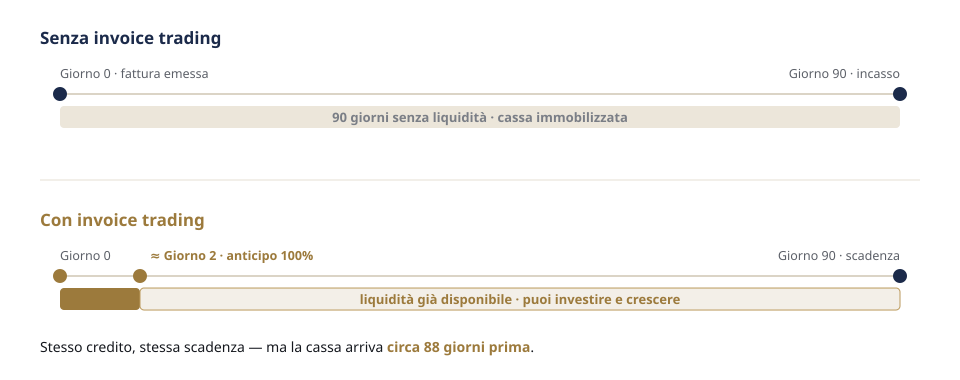

Crowdfunding & Capitale
Dal lending crowdfunding al private equity e venture capital: individuiamo le forme di raccolta più coerenti con i tuoi progetti.
Le tue fatture valgono già oggi. Con l'invoice trading le trasformi in cassa immediata, senza aspettare la scadenza e senza nuovo debito.
È la cessione di una fattura commerciale a un acquirente che ti anticipa l'importo prima della scadenza. Non è un prestito: monetizzi un credito che già possiedi. Brand Up mette in contatto la tua azienda con investitori qualificati, in modo rapido e trasparente.

Tre attori, un flusso semplice: cedi il credito alla piattaforma, ricevi l'anticipo in poche ore e mantieni il rapporto con il cliente, che paga a scadenza.

A parità di fattura e scadenza, anticipi il momento in cui la liquidità entra in cassa. Tempo che reinvesti in ordini, fornitori e crescita.

Quattro passaggi lineari: la tecnologia fa il lavoro pesante, le decisioni restano tue.
Carichi le fatture che vuoi valorizzare. Decidi tu cosa cedere, senza obblighi.
Gli acquirenti analizzano i crediti e la solidità del debitore e formulano una proposta trasparente.
Confronti le condizioni e scegli la proposta migliore. La cessione si perfeziona tra le parti.
Ricevi subito la liquidità. A scadenza il cliente paga e ricevi il saldo, al netto delle commissioni.
Rispondono a esigenze diverse. L'invoice trading non sostituisce la banca: la affianca, liberando cassa senza intaccare la capacità di indebitamento.
| Aspetto | Invoice Trading | Prestito bancario |
|---|---|---|
| Natura | Cessione di un credito che già possiedi | Nuovo debito iscritto a bilancio |
| Impatto sull'indebitamento | Nessun nuovo debito | Aumenta l'esposizione |
| Tempi di erogazione | 48–72 ore | Settimane, talvolta mesi |
| Garanzie reali | Di norma non richieste | Spesso richieste |
| Cosa viene valutato | La solidità del tuo cliente debitore | Il merito creditizio della tua azienda |
| Flessibilità | Scegli quali fatture cedere | Importo e piano di rimborso fissi |
| Rapporto con il cliente | Lo gestisci tu, come sempre | — |
Quando il bisogno è l'equilibrio di tutta la catena: tu incassi prima, i fornitori vengono pagati, i clienti ottengono dilazioni. Il capitale circolante lavora per tutti.

Analizziamo e combiniamo le soluzioni più adatte alla tua fase di crescita, su misura.
Dal lending crowdfunding al private equity e venture capital: individuiamo le forme di raccolta più coerenti con i tuoi progetti.
Ottimizziamo il flusso di cassa lungo la filiera, gestendo i rischi e rafforzando le relazioni con fornitori e clienti.
Valutiamo gli strumenti di mercato e costruiamo la combinazione più efficiente per i tuoi obiettivi.
Devi finanziare nuovi ordini e non vuoi frenare lo sviluppo aspettando gli incassi.
Clienti esteri e tempi di pagamento lunghi: trasformi le fatture in cassa subito.
Lavori con GDO o grandi gruppi che impongono dilazioni di 90–120 giorni.
Devi coprire i picchi di produzione e magazzino prima che arrivino gli incassi.
No. È la cessione di un credito a un acquirente che lo anticipa: non è un prestito e non aumenta l'indebitamento.
No. Scegli liberamente quali crediti presentare e quali proposte accettare, mantenendo il controllo delle relazioni con i clienti.
Tipicamente fino a circa il 90% del valore, in 48–72 ore. Il saldo, al netto delle commissioni, ti è riconosciuto quando il cliente paga.
Dipende dalla formula scelta: in molti casi continui a gestire tu il rapporto e l'incasso. Le modalità sono concordate prima.
Operatori e investitori autorizzati che valutano i crediti. La cessione si perfeziona tra cedente e acquirente, previa accettazione.
Operiamo come piattaforma di matching e supporto: ti mettiamo in contatto con gli acquirenti e ti affianchiamo. Le decisioni restano tue.
Inviaci una panoramica del tuo portafoglio fatture: ti rispondiamo con una valutazione concreta e senza impegno.